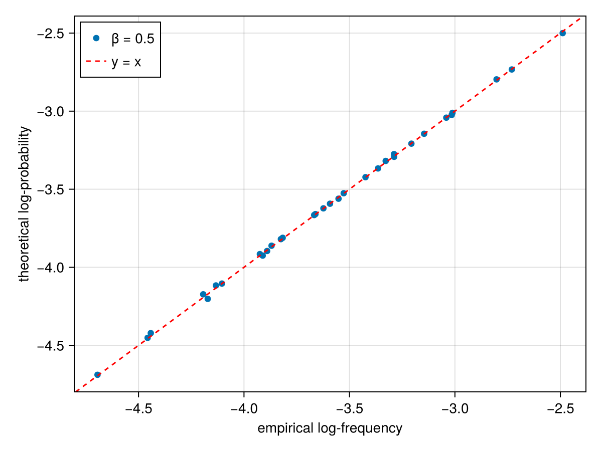

Metropolis-Hastings sampling
In addition to Gibbs sampling, this package provides Metropolis-Hastings sampling via the metropolis! function. This is useful for sampling from the RBM distribution at arbitrary inverse temperature $\beta$:
\[p_\beta(\mathbf{v}) \propto e^{-\beta\, F(\mathbf{v})}\]
where $F(\mathbf{v})$ is the free energy. Setting $\beta = 1$ recovers the standard RBM distribution, while $\beta < 1$ samples from a higher-temperature (more uniform) distribution and $\beta > 1$ from a lower-temperature (more peaked) distribution.
In this example, we validate the Metropolis sampler on a small RBM where we can enumerate all $2^N$ visible configurations and compare the empirical frequencies to the exact theoretical probabilities.
Setup
We create a small Binary RBM with 5 visible and 2 hidden units, and run Metropolis sampling at inverse temperature $\beta = 0.5$.
import Makie
import CairoMakie
using Statistics: mean, std, var, cor
using Random: randn!, bitrand
using LogExpFunctions: logsumexp
using RestrictedBoltzmannMachines: BinaryRBM, energy, free_energy, metropolis!
N = 5
M = 2
rbm = BinaryRBM(randn(N), randn(M), randn(N, M) / √N);
β = 0.5
nsteps = 10000
nchains = 100
v = bitrand(N, nchains, nsteps)
metropolis!(v, rbm; β);Comparing empirical and theoretical distributions
We compute the empirical frequencies from the samples (discarding the first 1000 steps as burn-in) and compare them to the exact Boltzmann probabilities.
counts = Dict{BitVector, Int}()
for t in 1000:nsteps, n in 1:nchains
counts[v[:,n,t]] = get(counts, v[:,n,t], 0) + 1
end
freqs = Dict(v => c / sum(values(counts)) for (v,c) in counts);Enumerate all $2^N = 32$ possible configurations and compute their free energies.
𝒱 = [BitVector(digits(Bool, x; base=2, pad=N)) for x in 0:(2^N - 1)];
ℱ = free_energy.(Ref(rbm), 𝒱);The scatter plot below compares the log of the empirical frequencies (x-axis) against the log of the theoretical Boltzmann probabilities at $\beta = 0.5$ (y-axis). Points falling on the diagonal (red line) indicate perfect agreement.
fig = Makie.Figure()
ax = Makie.Axis(fig[1,1], xlabel="empirical log-frequency", ylabel="theoretical log-probability")
Makie.scatter!(ax,
log.([get(freqs, v, 0.0) for v in 𝒱]),
-β * ℱ .- logsumexp(-β * ℱ),
label = "β = $β"
)
Makie.ablines!(ax, 0, 1, color=:red, linestyle=:dash, label="y = x")
Makie.axislegend(ax, position=:lt)
fig
The Pearson correlation confirms excellent agreement:
cor([get(freqs, v, 0.0) for v in 𝒱], exp.(-β * ℱ .- logsumexp(-β * ℱ)))0.9998895879575298This page was generated using Literate.jl.